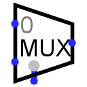

Мультиплексор
Мультиплексор
| Библиотека: | Коммутаторы |
| Введён в: | 2.0 Beta 11 |
| Внешний вид: |
 |
Поведение
Копирует значение с одного из входов на левой стороне на выход на правой стороне. Выбор конкретного входа, сигнал с которого транслируется на выход, определяется текущим значением на управляющем входе.
Контакты (при направлении компонента вправо, при расположении управляющего входа снизу/слева):
- Контакты на левой стороне, переменное количество (входы, разрядность соответствует атрибуту Биты данных):
- Входные данные, одно из значений которых передается на выход. Входы нумеруются по порядку сверху вниз, начиная с 0.
- Контакт на правой стороне (выход, разрядность соответствует атрибуту Биты данных):
- Выходное значение. Оно повторяет сигнал на том входе на левой стороне, индекс которого совпадает с текущим значением на управляющем входе. Если на управляющем входе присутствует неопределённый (например, неинициализированное значение U) или ошибочный (E) сигнал, то выходной сигнал будет полностью состоять из битов U.
- Нижний контакт, слева, отмечен серым кружком (вход, разрядность соответствует атрибуту Разрядность адреса):
- Управляющий (выбирающий) вход. Значение на этом входе определяет, какой из входов данных на левой стороне будет скоммутирован на выход на правой стороне.
- Нижний контакт, справа (вход, разрядность равна 1):
- Вход разрешения (EN). При логическом 0 на этом входе выход мультиплексора переходит в отключенное состояние (зависит от атрибута При отключенном выходе), независимо от значений на информационных и управляющем входах.
Атрибуты
Когда компонент выбран или добавляется, цифровые клавиши от 1 до 4 меняют его атрибут Разрядность адреса, комбинации клавиш от Alt-0 до Alt-9 меняют его атрибут Биты данных, а клавиши со стрелками — его атрибут Направление.
- Направление
- Направление компонента (его стока/выхода относительно истоков/входов).
- Управляющий вход
- Расположение управляющего входа и входа разрешения относительно компонента.
- Разрядность адреса
- Разрядность управляющего (выбирающего) входа компонента. Количество информационных входов мультиплексора равно 2Разрядность_адреса.
- Биты данных
- Разрядность коммутируемых информационных данных.
- При отключенном выходе
- Определяет состояние выходов при отключении компонента (когда на входе разрешения логический 0). Доступны варианты: Z-состояние (высокоимпедансное состояние (Z) на выходе) или Ноль.
- Вход разрешения (EN)
- Определяет наличие у компонента входа разрешения. Этот параметр оставлен в основном для совместимости со схемами, созданными в старых версиях Logisim, где вход разрешения отсутствовал.
Поведение Инструмента «Нажатие»
Не предусмотрено.
Назад к Справке по библиотеке